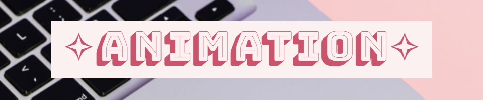

⳾*⑅*❀⑅*❀⑅*❀⑅*❀⑅*❀⑅*⳾⳾*⑅*❀⑅*❀⑅*❀⑅*❀⑅*❀⑅*⳾⳾*⑅*❀⑅*❀⑅*❀⑅*❀⑅*❀⑅*⳾⳾*⑅*❀⑅*❀⑅*❀⑅*❀⑅*❀⑅*⳾
‧͙⁺˚*･༓☾Home☽༓･*˚⁺‧͙ |
‧͙⁺˚*･༓☾Raster Project☽༓･*˚⁺‧͙ |
‧͙⁺˚*･༓☾Vector Project☽༓･*˚⁺‧͙ |
‧͙⁺˚*･༓☾Animation Project☽༓･*˚⁺‧͙ |
‧͙⁺˚*･༓☾InDesign Project☽༓･*˚⁺‧͙ |
‧͙⁺˚*･༓☾Contact Me☽༓･*˚⁺‧͙
⳾*⑅*❀⑅*❀⑅*❀⑅*❀⑅*❀⑅*⳾⳾*⑅*❀⑅*❀⑅*❀⑅*❀⑅*❀⑅*⳾⳾*⑅*❀⑅*❀⑅*❀⑅*❀⑅*❀⑅*⳾⳾*⑅*❀⑅*❀⑅*❀⑅*❀⑅*❀⑅*⳾
The third project that we did was an animation project! This project was somewhat a hard yet fun challenge for me!
My first plan was to make a more elaborate animation than the final one that I had done. Originally, I wanted to do a scene with a creature reacting to multiple bubbles at night time. But due to my skill levels and the time I had to work on the project, I ended up going for something much more simple.
The final product that you see here is the pink creature from the vector project popping a bubble, then getting sad about it! Like I said in my InDesign postcards, this project made me realize how much work and care goes into animations and it made me appreciate all of the animated media I see even more.